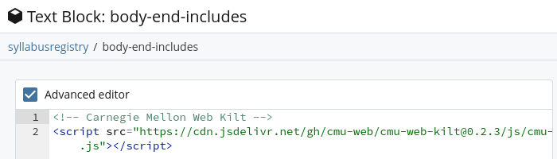
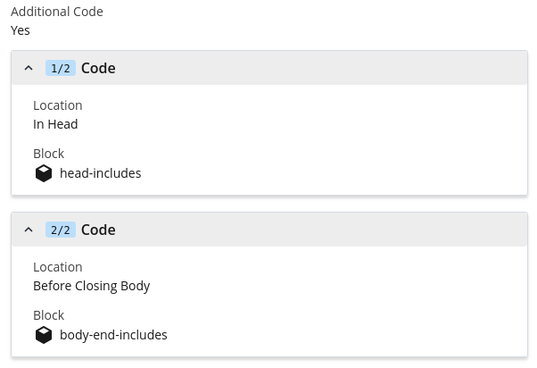

A university-provided CMS site already has CMU's template, so you only have to add the
kit's files: cmu-cms.css in the head of every page, after the template's
stylesheet and before the site's own, if it has one, so the site's styles take
priority. Components labeled Script also use cmu-app.js, loaded just
before </body>. Keep the comment above each line, so whoever
changes versions later can find the kit's lines among the site's other code.
In Cascade
Cascade adds code to every page from text blocks that the site's
setup block lists under Additional Code, each at a location: In Head
or Before Closing Body. Keep one block for each location, holding everything the
site adds there: the kit, the site's own stylesheet, analytics.
In the site's top folder, choose Add Content ›
Block › Text Block. Name it
head-includes, check Advanced editor, paste the
kit's lines and save it:
For components labeled Script, make a second text block,
body-end-includes, the same way:
<!-- Carnegie Mellon Web Kilt -->
<script src="https://cdn.jsdelivr.net/gh/cmu-web/cmu-web-kilt@0.6.0/js/cmu-app.js" integrity="sha384-Etmkex3xbkUyRJUcASnyzfeR4g6yNwaWbaK+Z3sJvOxk76pCKgcYHAtNZppbmH8Z" crossorigin="anonymous"></script>

Open the site's setup block and select Edit. Near
the end, set Additional Code to Yes. Add a
Code item for each block: head-includes at
In Head, and body-end-includes at
Before Closing Body. Save it.

Preview a page to check, then publish the site's pages, which pick up the
setup block's code when they're published.
From then on, paste components into any page's content section, in its Source
code view.
Find a Component
In Another CMS
In Drupal or another CMS on CMU's template, add the kit's lines where the theme
adds code to every page, usually the theme's page template or a setting for extra
code. If you don't manage the theme, ask whoever does.
In order to use components labeled Script, you'll also need to include this just
before
</body>:
<!-- Carnegie Mellon Web Kilt -->
<script src="https://cdn.jsdelivr.net/gh/cmu-web/cmu-web-kilt@0.6.0/js/cmu-app.js" integrity="sha384-Etmkex3xbkUyRJUcASnyzfeR4g6yNwaWbaK+Z3sJvOxk76pCKgcYHAtNZppbmH8Z" crossorigin="anonymous"></script>
Paste components into a page's HTML source. Keep a separate, site-specific
stylesheet for anything particular to the site. We don't recommend overriding
cmu- classes there; if a component doesn't fit, ask for a change to
the kit. Try a new version on staging before you publish.
Web Apps
A web app builds its own pages on CMU's template: it loads the template's font,
stylesheets and scripts, both of the kit's stylesheets and the kit's script, and wraps
each page in the template's header and footer. Start from
The Whole Page, which has all of it. Keep your own
copy of a release in the app, so it doesn't depend on jsDelivr being up.
Use <link> tags, not @import, which loads files one at
a time. Give <body> the class cmu-app. A page shown
inside another tool, such as a Canvas LTI frame, has no CMU header or footer; give it
cmu-framed instead, which also pads the page.
To keep your own copy, copy a release's files into your app's static folder, with the
version in the folder name so it's obvious which one you have, and commit them:
V=0.6.0
D=static/vendor/cmu-web-kilt-$V
mkdir -p $D/css $D/js
for f in css/cmu-cms.css css/cmu-app.css js/cmu-app.js; do
curl -fsSL "https://cdn.jsdelivr.net/gh/cmu-web/cmu-web-kilt@$V/$f" -o "$D/$f"
done
Don't edit the copied files. A newer release replaces them.
Keep your own styles separate, in an application-specific
stylesheet. We don't recommend overriding cmu- classes there; if a
component doesn't fit, ask for a change to the kit.
Choose a release and move to newer ones as
Versions describes.
Pick your stack for where the kit's files go. Each component's Framework tab has what
that component takes in React, Svelte, Vue, Rails or Django.
In React
Copy the kit's css/ and js/ into
public/vendor/cmu-web-kilt-0.6.0/ and load everything in
index.html, not from components: the template's scripts and
cmu-app.js run once for the page, and the kit starts components as
React renders them. Render the app into the template's
<main id="content">
(createRoot(document.getElementById("content"))), so its sections sit
where the template expects them, and keep the template's header and footer in
index.html, outside the app.
In SvelteKit, copy the kit's css/ and js/ into
static/vendor/cmu-web-kilt-0.6.0/ and load everything in
src/app.html. The app renders into the template's
<main id="content">, and the kit starts components as Svelte
renders them; keep the template's header and footer in app.html,
outside the app.
Copy the kit's css/ and js/ into
public/vendor/cmu-web-kilt-0.6.0/ and load everything in
index.html, not from components: the template's scripts and
cmu-app.js run once for the page, and the kit starts components as
Vue renders them. Mount the app on the template's
<main id="content">
(createApp(App).mount("#content")), and keep the template's header
and footer in index.html, outside the app.
Copy the kit's css/ and js/ into
public/vendor/cmu-web-kilt-0.6.0/ and link them from your layout.
Load cmu-app.js in the <head> with
defer, so Turbo keeps it from page to page; it starts the components
on each new page, and on pages Turbo restores from its cache. The template's own
scripts stay at the end of <body>, where Turbo runs them for
each page.
Copy the files in, as above, or install the tagged release from GitHub so the
version sits in package.json. Installing from GitHub only works where
npm is allowed to fetch from it; many build machines aren't.
In PHP, Java or anything else, copy the files in as above and link them from your
layout with your framework's own paths.
Prototypes
For a mockup or a one-off page, link everything from the CDN. It's the quickest way to
start, but the page depends on jsDelivr. Copy the header and footer from
The Whole Page.
Each release is a git tag, such as 0.2.7, listed on the
releases page, and
jsDelivr serves every tag's files at a fixed address.
Always pin an exact version. An address with a version range
(@0) or none at all changes under you when a new release comes out.
Copy each CDN line whole. Its integrity value matches
that release's file exactly, so the browser refuses a file that's been changed. When
you move to a new version, replace the whole line, not just the number.
Versions follow semver. A patch (0.2.1) fixes things, a minor
version (0.3.0) adds things, and a major version (1.0.0) can rename or remove
classes.
Moving to a New Version
Read the release notes on the
releases page. For a
major version, they list every renamed or removed class.
Change the version: replace the kit's lines in your CMS's head code (in Cascade, the
head-includes and body-end-includes blocks) with the new
release's, copied whole from this page; or change it in
package.json (then npm install), or in your copied
folder's name and your layout's links.
Check your pages, on staging for a CMS site, before you publish or deploy.
File Inventory
Each component's labels on the Components page say which
of these it uses.
File
Load It On
What It Does
CMU's template: main.6.7.min.css, main.6.7.min.js and
the rest
Every page, first. A university-provided CMS site already has it; an app adds it
(see Web Apps)
Page structure, type, buttons, links and the components labeled Template
cmu-cms.css
CMS sites and apps, after the template's stylesheet
Styles for components labeled CMS, and the kit's colors
cmu-app.css
Apps, after cmu-cms.css
Styles for components labeled App: forms, tables with actions, dialogs and other
controls
cmu-app.js
Pages with components labeled Script, after the template's scripts
Behavior for components labeled Script
bootstrap-icons.min.css
Pages with components labeled Icons, after the kit's stylesheets
The icons, from
Bootstrap Icons,
an optional library that isn't part of the kit